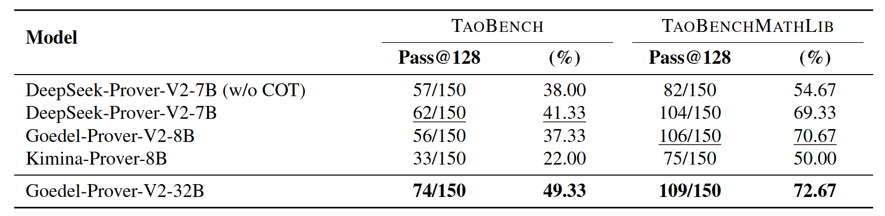
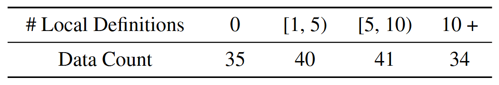
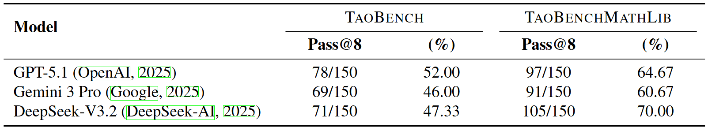
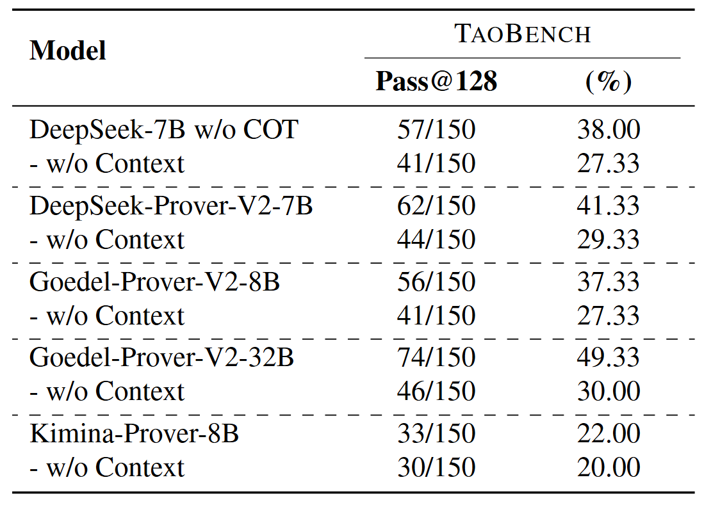
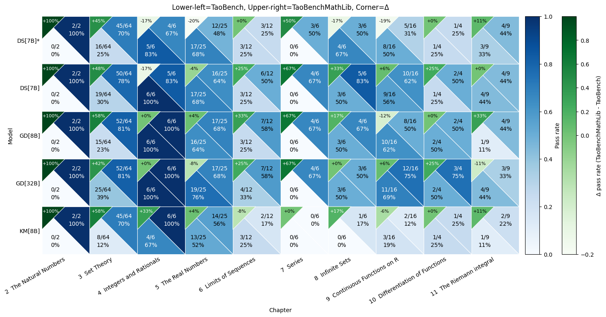
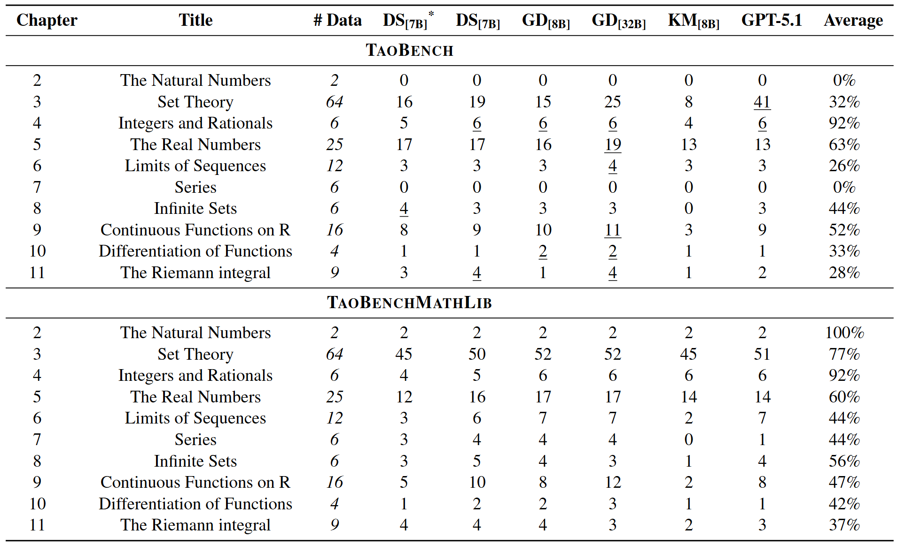

Automated theorem proving (ATP) benchmarks largely consist of problems formalized in MathLib, so current ATP training and evaluation are heavily biased toward MathLib's definitional framework. However, frontier mathematics is often exploratory and prototype-heavy, relying on bespoke constructions that deviate from standard libraries. In this work, we evaluate the robustness of current ATP systems when applied to a novel definitional framework, specifically examining the performance gap between standard library problems and bespoke mathematical constructions.
We introduce TaoBench, an undergraduate-level benchmark derived from Terence Tao's Analysis I, which formalizes analysis by constructing core mathematical concepts from scratch, without relying on standard Mathlib definitions, as well as by mixing from-scratch and MathLib constructions. For fair evaluation, we build an agentic pipeline that automatically extracts a compilable, self-contained local environment for each problem. To isolate the effect of definitional frameworks, we additionally translate every problem into a mathematically equivalent Mathlib formulation, yielding paired TaoBenchMathlib statements for direct comparison.
While state-of-the-art ATP models perform capably within the MathLib framework, performance drops by an average of roughly 26% on the definitionally equivalent Tao formulation. This indicates that the main bottleneck is limited generalization across definitional frameworks rather than task difficulty. TaoBench thus highlights a gap between benchmark performance and applicability, and provides a concrete foundation for developing and testing provers better aligned with research mathematics.
Below are examples from TaoBench and TaoBenchMathlib. TaoBench is grounded in 150 exercises from Terence Tao's Lean formalization of Analysis I. This formalization develops core concepts of analysis from first principles rather than relying on standard MathLib definitions, and in some cases combines from-scratch constructions with MathLib components. Moreover, we construct a paired control: for each Tao-style problem, we construct a mathematically equivalent MathLib formulation, which we title TaoBenchMathlib. This paired representation isolates the effect of definitional frameworks from the difficulty of each problem, enabling a direct evaluation of impact on model performance.


Constructing a benchmark that preserves the exact textbook formalizations while producing a self-contained succinct compilable Lean snippet presents significant technical challenges for current LLMs. We find that naïvely importing entire chapters or sections of the textbook leads to excessive context length, compilation failures, and unfaithful re- constructions of the original problem and its intent. We observe that without explicit targets, modern frontier LLMs struggle to identify all information critical for compilation over large textbook contexts containing extensive irrelevant information. Furthermore, querying frontier LLMs with the objective of compilation may succeed in compilation while silently changing the intended meaning.
This necessitates a pipeline that provides grounded reference information to the model, to avoid hallucinating and trivializing statements, as well as allowing for multiple compilation attempts. Thus, we introduce an agentic framework that retrieves the minimal context from the textbook and iteratively attempts compilation and fixes issues until it achieves successful compilation.
The final output of this process is two-fold. First, we construct an agentic pipeline that faithfully retrieves minimal, compilable contexts from a large, custom Lean project. Second, we generate TaoBench, a set of textbook-syntax exercises with minimal, fully compilable Lean context that preserves the intent of the original formalization. This benchmark enables a controlled evaluation of model performance under a genuine out-of-distribution formal setting, while avoiding confounding factors arising from missing context or compilation failures.

Agentic framework for automatically extracting a compilable, self-contained local environment from a formalized textbook. The construction of references and dependencies for each exercise is performed using the JiXia tool. An agentic harness, equipped with a file-lookup tool and a Lean verifier, then iteratively builds a compilable, self-contained local environment.
Our translation pipeline consists of two stages: a rewriting stage and an equivalence-checking stage. In the rewriting stage, we prompt GPT-5.1 with web search enabled to reformulate the Tao-style statement into a MathLib-compatible version. In the equivalence-checking stage, using the JiXia tool, we extract the target proof states for both the Tao and MathLib formulations, grounding the comparison in their respective proof obligations. We then prompt GPT-5.1, again with web search enabled, to assess whether the two formulations are mathematically equivalent given their statements and target states. Candidates that fail this equivalence check are discarded, and the pipeline is restarted to regenerate a valid reformulation.
To verify the quality of both versions of the benchmark, we had expert human annotators provide determinations on whether the TaoBench faithfully retrieved the context for each exercise, and whether each MathLib formalization was mathematically equivalent to its Tao counterpart. Each annotator had completed an equivalent Analysis I course and had experience in formal proving in Lean. Issues identified by annotators in context retrieval helped us construct a final agentic context retrieval pipeline that produces correct context for all 150 problems initially chosen to be in TaoBench.

Translation pipeline for converting exercises from Tao's definitional framework to MathLib's. The rewriting and equivalence checking stages ensure the compilability and mathematical equivalence of TaoBenchMathlib, followed by expert verification for additional assurance.
TaoBench comprises ten chapters (Chapters 2-11) and sixty-five subsections that follow a standard progression from foundational material (natural numbers, set theory, and number systems) to core real analysis topics, including limits, series, continuity, differentiation, and the Riemann integral.

The table below reports pass@128 results on TaoBench and TaoBenchMathlib. Although the two versions of the benchmarks consist of mathematically equivalent problem sets, all evaluated provers perform substantially worse on the Tao formulations than on the MathLib formulations. This consistent degradation highlights the difficulty current provers face under a shift in definitional frameworks.

Model Performance on TaoBench and TaoBenchMathlib. Results are reported as pass rates on 150 problems.
We observe that the performance delta between TaoBench and TaoBenchMathlib performance increases with context length. At n = 0, the average delta across models is near zero, which confirms that Tao problems without local definitions are not inherently harder than their MathLib counterparts. However, when the number of in-context definitions increases to 5 ≤ n < 10, the average delta exceeds 40 percentage points, and for n ≥ 10, it approaches or exceeds 50 percentage points for all models. This pattern suggests that the performance difference is driven by an inability to effectively integrate and reason over unfamiliar definitions introduced in context.

Model Performance on TaoBench and TaoBenchMathlib. Results are reported as pass rates on 150 problems.

Counts of data samples across ranges of different numbers of local definitions.
Frontier Models: Frontier models underperform both Goedel-Prover-V2-32B and several 7B parameter ATP models on the MathLib problem formulations, which indicates that ATP models excel in definitional frameworks in which they are trained. However, while the performances of the frontier models do degrade on the Tao problem formulations, they achieve performances comparable to - or even in excess of - Goedel-Prover-V2-32B. These results indicate that the relative advantage of frontier models on Tao formulations is driven by a superior capability to leverage in-context examples rather than overall stronger proving capabilities.

Model Performance on TaoBench and TaoBenchMathlib for frontier foundation models.

Model performance on TaoBench with and without the retrieved context as part of the input.
Context Dependency: Across all models, removing contextual information leads to a consistent, but relatively modest drop in performance compared to the full-context Tao setting. A manual review of the problems that models solved without context shows that the associated set of references either contained no additional statements (i.e., context length of zero) or referenced a small set of statements that were similar to or in the standard MathLib definitional framework (ex., the rational numbers). Taken with the context-length analysis, these results indicate that current formal theorem provers do not reliably benefit from in-context definitional information unless it conforms closely to their training distribution. The presence of explicit local definitions is therefore not inherently helpful and can be actively harmful, highlighting a limitation in models ability to perform in-context definitional grounding.
The figure below breaks down pass rates by chapter and shows that the overall Tao-MathLib gap is not uniform: it is concen- trated in a few chapters where the representation of core objects diverges most from MathLib. A large and consistent gap appears in Set Theory (Ch. 3), where all five models exhibit a substantial MathLib advantage of roughly 42-58 percentage points. Two pronounced failure modes occur in The Natural Numbers (Ch. 1) and Series (Ch. 7): for all five models, Tao accuracy falls to 0%, while the MathLib translation remains solvable, suggesting that the bottleneck is not the underlying analysis content but rather sensitivity to the new definitional framework.

Model Performance by Chapter. For each cell, accuracies on TaoBench and TaoBenchMathlib are shown in the upper-right and lower-left corners, respectively. The upper-left corner shows the difference (TaoBenchMathlib - TaoBench). DS[7B]* indicates DeepSeek-Prover-V2-7B (w/o COT).
Model Performance by Chapter.
@ PLACEHOLDER